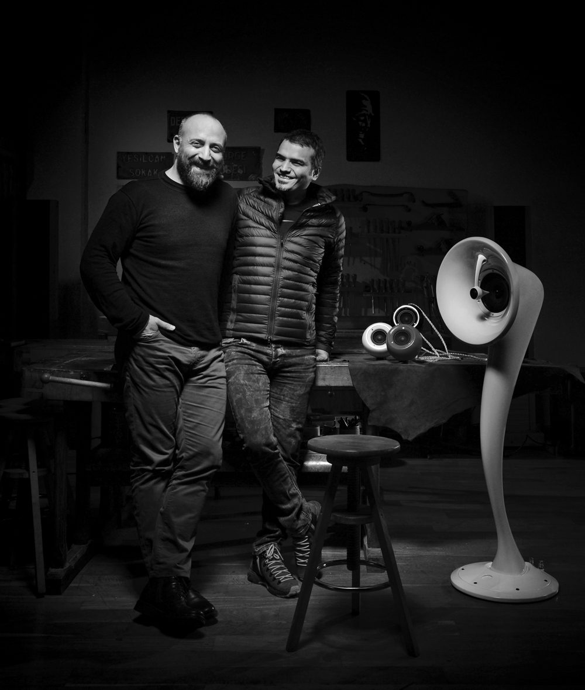
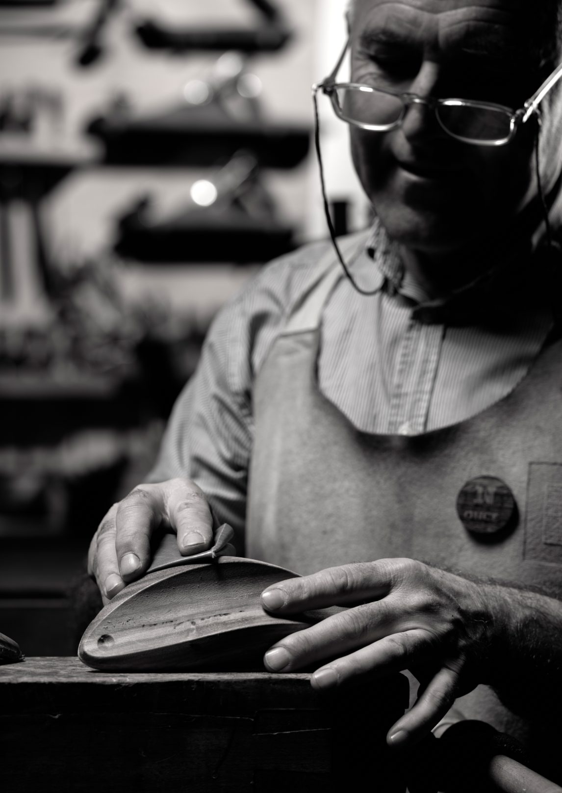
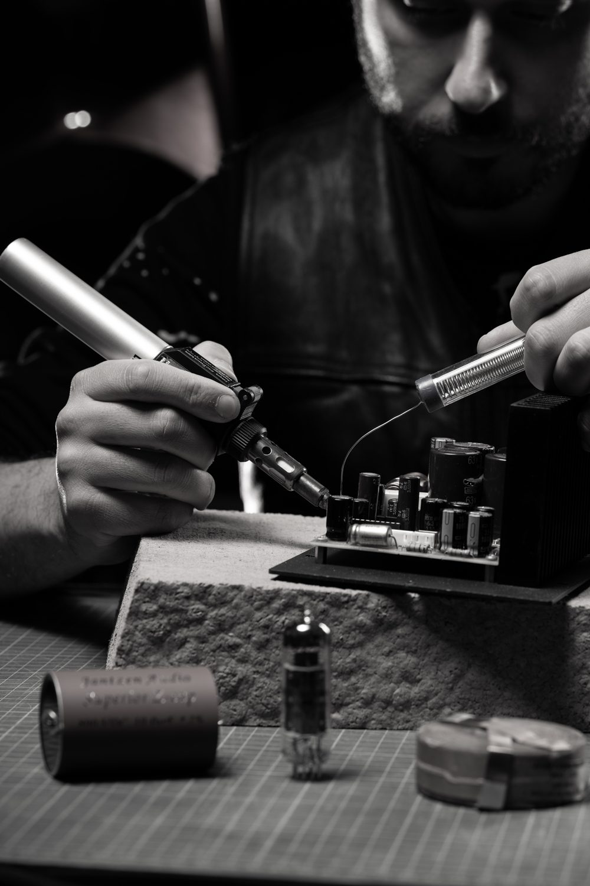
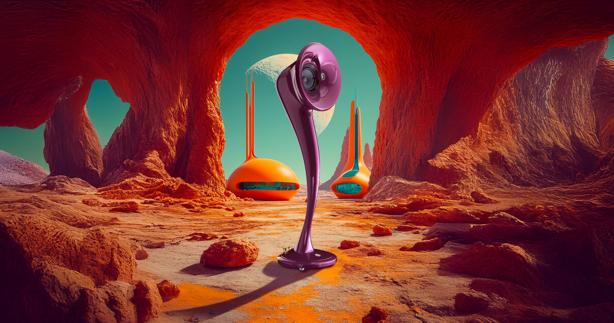
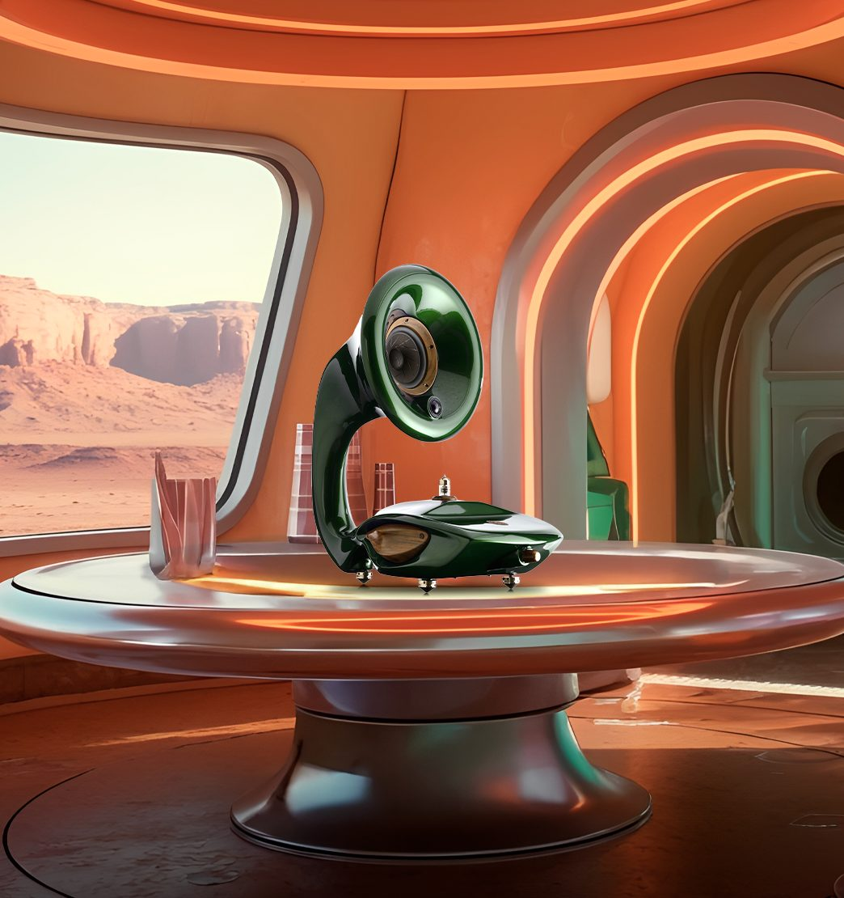

before once custom
before speakers
before technology
there was music
and it was through music
that our journey started
once custom'dan önce
hoparlörlerden önce
teknolojiden önce
müzik vardı
ve yolculuğumuz
müzikle başladı
we are two old friends brought together by a shared belief: music has the power to shape how we experience life — it inspires us, moves us and stays with us long after the last note has faded.
ortak bir inançla bir araya gelen iki eski arkadaşız: müziğin hayatı nasıl deneyimlediğimizi şekillendirme gücü vardır — bizi ilham verir, harekete geçirir ve son nota söndükten çok sonra da kalır.
coming from different backgrounds but sharing the same passion, we began imagining a different relationship between people, music and sound.
farklı geçmişlerden gelip aynı tutkuyu paylaşarak, insanlar, müzik ve ses arasında farklı bir ilişki hayal etmeye başladık.
for almost a century, speakers have been designed around faithful reproduction. playback became the standard. accuracy became the goal. but music itself is not static — and neither are we.
neredeyse bir yüzyıl boyunca hoparlörler sadık yeniden üretim üzerine tasarlandı. oynatma standart hale geldi. doğruluk hedef oldu. ancak müziğin kendisi statik değildir — ve biz de öyle değiliz.
this is where our philosophy begins felsefemiz burada başlar

we became interested in something very simple: how sound exists in nature. we looked at resonance, vibration and the diaphragm — observing how sound moves through the body and interacts with physical form.
çok basit bir şeyle ilgilenmeye başladık: sesin doğada nasıl var olduğuyla. rezonansı, titreşimi ve diyaframı inceledik — sesin vücut içinde nasıl hareket ettiğini ve fiziksel formla nasıl etkileşime girdiğini gözlemledik.
this shifted our focus away from technology alone and towards a more organic understanding of sound — one that begins with the body, not the circuit board.
bu odağımızı tek başına teknolojiden uzaklaştırarak sesin daha organik bir anlayışına yöneltti — devre kartıyla değil, bedenle başlayan bir anlayış.

every Once Custom piece is crafted by hand. not to be identical. but to be personal. each cabinet built in Istanbul, each driver individually tuned, each finish a considered design decision.
her Once Custom parçası elle üretilir. özdeş olmak için değil. kişisel olmak için. her kabinet İstanbul'da inşa edilir, her sürücü tek tek ayarlanır, her kaplama düşünülmüş bir tasarım kararıdır.

once sound becomes physical, visible, and part of how a space is experienced — it naturally enters the language of art, design, architecture and fashion.
ses fiziksel, görünür ve bir mekânın deneyimlenme biçiminin parçası haline geldiğinde — doğal olarak sanat, tasarım, mimari ve moda diline giriyor.
it is not a speaker that reproduces music. it is an artwork that breathes life into music.
bu müziği yeniden üreten bir hoparlör değil. müziğe hayat veren bir sanat eseridir.
Thales tells us that water is the source of all things. Since music is our source of life, we named our first creation Su — water in Turkish. Every name that followed carries the same weight: a word from our language, our culture, our world.
Thales'e göre su her şeyin kaynağıdır. Müzik yaşam kaynağımız olduğundan, ilk yaratımımıza Türkçe'de su anlamına gelen Su adını verdik. Sonraki her isim aynı ağırlığı taşır: dilimizden, kültürümüzden, dünyamızdan bir sözcük.

only music can fill the void in our souls ruhumuzun boşluğunu yalnızca müzik doldurabilir
Explore the Collection Koleksiyonu Keşfet →